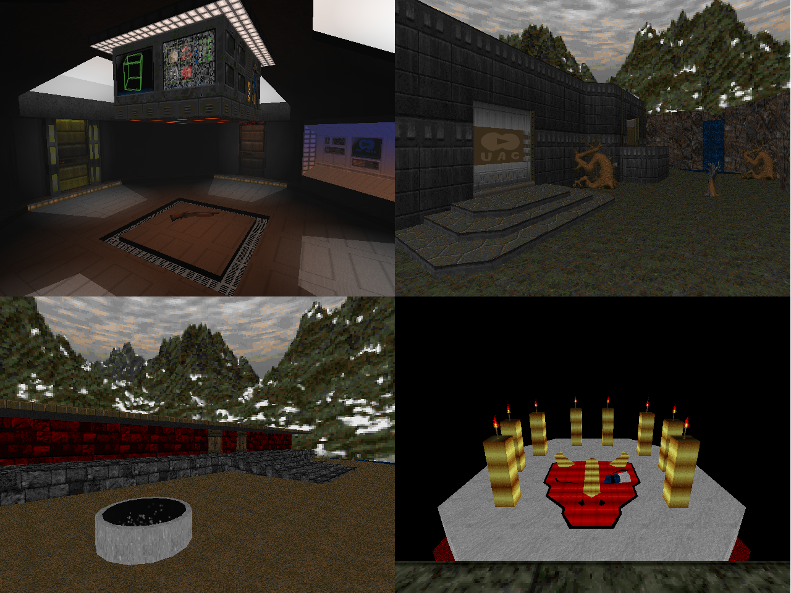

| Year | 2026 |
| IWAD | Doom II |
| Source port | GZ/UZDoom |
| Game mode(s) | Single-player |
| Map(s) | MAP01 |
Forty-Headed Dragon is a collaborative "megamap" made by some members of the Piece of Pie Software community in
celebration of our friend Drakiah's 40th birthday, orchestrated by Yours Truly. I got the idea back in May to
get a crew together for the occasion and invited every Doom mapper I could think of in the PoPS community to contribute.
Sadly, some of them dropped out, but contributions from five people isn't bad all things considered.
The map is divided into five sections (counting out the hub), each being made by one of the five mappers: myself,
CravenCoyote, crazyt0ni, grapes and Ketchup_Sorcerer. I won't describe each section in detail
here, but the map's objective is to basically find three keys scattered across the map and open the door to an arena
where an epic battle against a custom boss takes place.
In addition to the duties that come with being the project lead, I wrote the ZScript for the map's final boss. If you're
a long-time PoPS fan, chances are you'll recognize it - but that's as much as I'm willing to spoil about it.